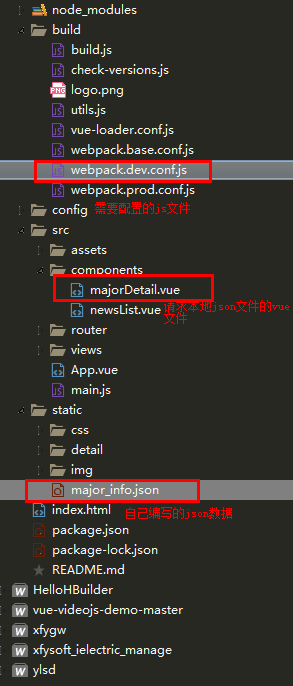
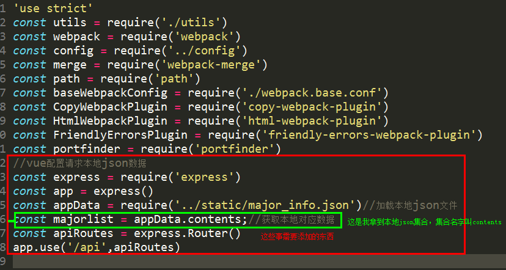
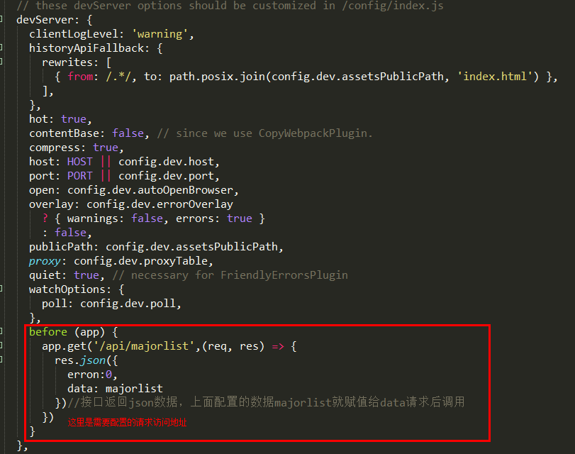
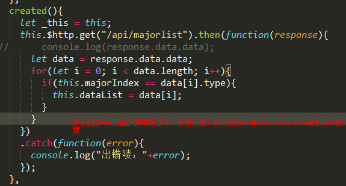
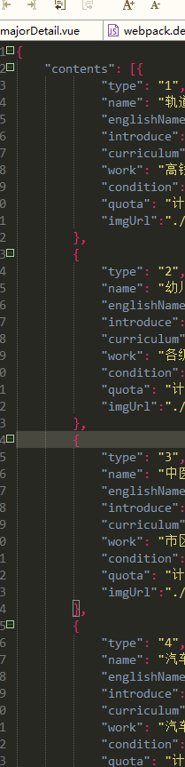

1.第一步，这是目录结构

2.接下来是build/webpack.dev.conf.js文件需要配置的内容

代码：
//vue配置请求本地json数据
const express = require('express')
const app = express()
const appData = require('../static/major_info.json')//加载本地json文件
const majorlist = appData.contents;//获取本地对应数据
const apiRoutes = express.Router()
app.use('/api',apiRoutes)

代码：
before (app) {
app.get('/api/majorlist',(req, res) => {
res.json({
erron:0,
data: majorlist
})//接口返回json数据，上面配置的数据majorlist就赋值给data请求后调用
})
}
3.接下来就是vue文件的请求写法：

代码：
created(){
let _this = this;
this.$http.get("/api/majorlist").then(function(response){
// console.log(response.data.data);
let data = response.data.data;
for(let i = 0; i < data.length; i++){
if(this.majorIndex == data[i].type){
this.dataList = data[i];
}
}
})
.catch(function(error){
console.log("出错喽："+error);
});
}
4.这是我的json文件数据格式
